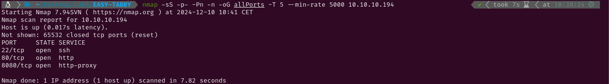

EASY-TABBY
1. Recon
Nmap
nmap finds three open ports: SSH (22), HTTP (80 & 8080).

The NSE (Nmap Scripting Engine) finds the following information:
- The box is using Ubuntu
- The version of the SSH service is 8.2p1
- The port 80 HTTP server is using Apache 2.4.41 and the title suggests it is a hosting website.
- The port 8080 HTTP is using Apache Tomcat

HTTP - TCP 80
Visiting http://10.10.10.194 shows a hosting website. There is a domain (megahosting.htb) which I will add to /etc/hosts. After trying a DNS zone transfer and fuzzing subdomains I haven’t found any, so I will go on fuzzing directories in http://10.10.10.194/ and http://megahosting.htb.

Gobuster throws the same results for both URL’s. None of the files seem interesting (by now) since all of them either appear not to be vulnerable (logo.php, index.php and Readme.php) or doesn’t show anything (news.php).

I will use feroxbuster to fuzz both /assets and /files as it is faster than gobuster and can do a recursive fuzzing exploring also any directories that are found. It finds /files/statement which is a page with a bunch of links and apology for a data breach. None of those links work except for News, that redirects to http://megahosting.htb/news.php?file=statement. This new URL shows that news.php needed a parameter to work correctly. This parameter, if not correctly sanitized, could lead to a LFI.


Trying to perform an LFI was succesful and didn’t require any further testing than using ../../../../../../ to access the system root directory. As there is no sanitization, files like /etc/passwd can be accessed. The user ash is shown in that file.

Apache Tomcat - 8080
Both http://megahosting.htb:8080/ and http://10.10.10.194:8080/ redirect to the same page. This site is the fault Tomcat page for this port. Some useful information is found here:
CATALINA_HOME = /usr/share/tomcat9/CATALINA_BASE = /var/lib/tomcat9/- The manager_webapp is restricted to users with role
admin-gui - Clicking the documentation link the version of Tomcat can be seen.
Apache Tomcat 9.0.31.

After some trying to access tomcat-users.xml through the LFI which was discovered before to see which users have the admin-gui role I haven’t been able to find anything. To find alternative routes this file could be in I am going to install tomcat9 in a docker container and use locate to find them.

After installing it I have found another route: /usr/share/tomcat9/etc/tomcat-users.xml. The LFI successfully shows the content of this file where the user tomcat is found next to the password $3cureP4s5w0rd123!.


As this user doesn’t have the manager-gui role, the manager webapp can’t be accessed, but the host-manager webapp accepts those credentials and the following website is shown.

2. Gaining Access
As I have never exploited a tomcat before I have looked for existing vulnerabilities and exploits for this host-manager service. After some time I have come across this HackTricks post which not only explains how to get Remote Code Execution but also has the full path to tomcat-users.xml that I have discovered using docker. Something like curl --upload-file monshell.war -u 'tomcat:password' "http://localhost:8080/manager/text/deploy?path=/monshell" can be used to upload a .war file which will deploy an application. I will use that to upload an application which sends a reverse shell to me. To make that file I will be using msfvenom.


Visiting http://megahosting.htb:8080/reverse/ makes the application run and successfully sends the reverse shell to my Kali.

3. Privilege Escalation
Ash
After some time looking for passwords and files that I could exploit to get access to the system as the user ash I have found a compressed backup file which seems interesting. I will move it to my Kali and decompress it.

While trying to unzip it a password is required for some files. Using zip2john a hash for that password can be retrieved so it is posible using john to try cracking it with a brute force attack. After doing it the password admin@it is found.


After inspecting the contents of the zip file I haven’t found anything interesting so I will try to use that same password to log in as ash. It works so now I can read the user flag.

Root
Now the last step remains. I have to achieve root permissions in the system. The first thing I always do after logging in as a new user is checking which groups that user belongs to so I have noticed this user is in the lxd group. This group gives you permissions to use lxd and lxc which are tools to create containers within an operating system. Using lxc, a copy of the system can be created and placed inside a container. This allows access to any file from the original system, which can be read as root from within the container. There is an exploit in searschsploit which automates this process.

This exploit and an Alpine (or any other distribution) image have to be moved to the target. After that the script can be run.
The first try to run the script has failed because lxc is not in the PATH but after modifying it I have successfully ran the script and the container has been created so now I can read root.txt and submit the flag. Note: doing cat /root/root.txt does not work because that root folder is the container root folder, not the copied root folder of the target. The flag is located in /mnt/root/root/root.txt.